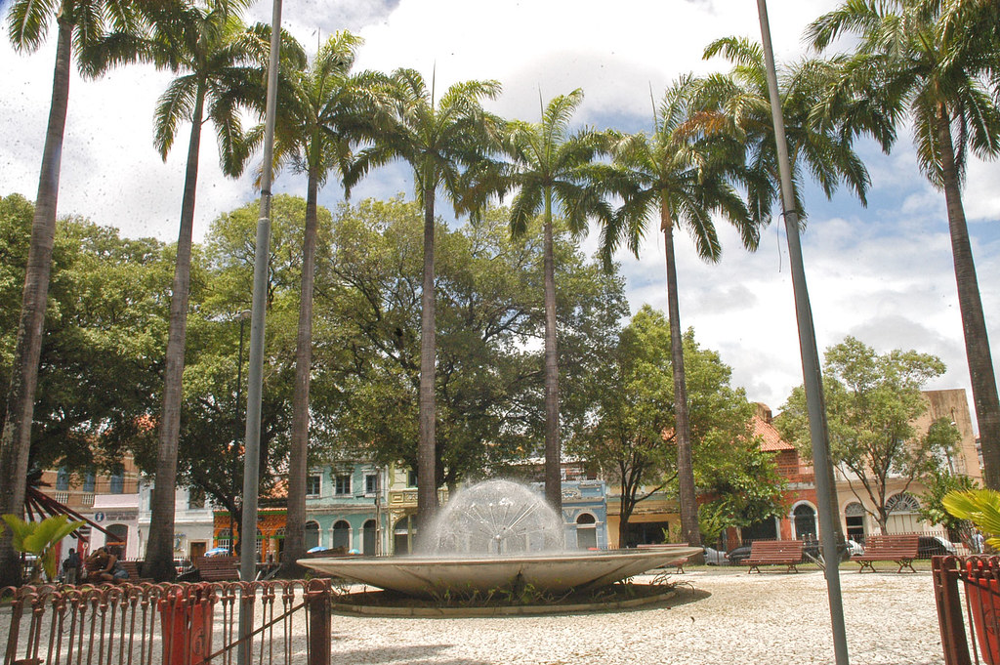
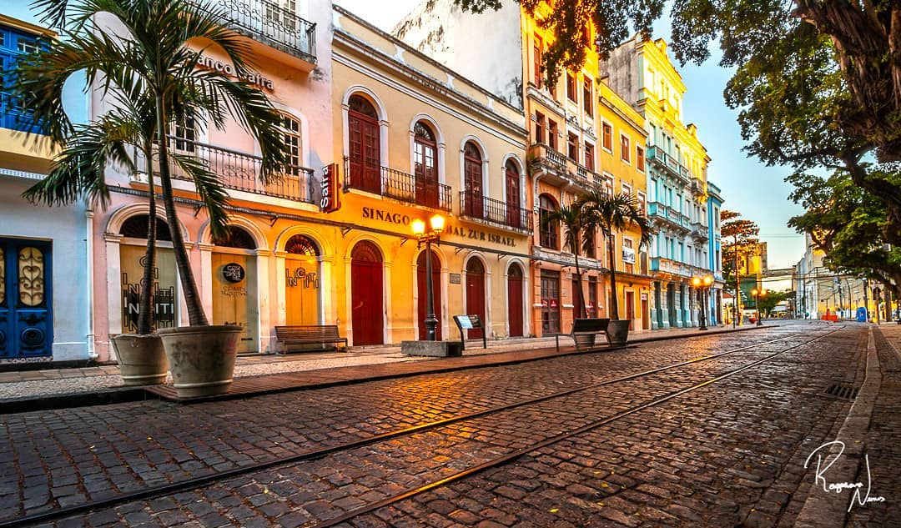

1. Praça do Arsenal
A Praça do Arsenal é uma das praças mais antigas do Recife, localizada no Recife Antigo. É um ponto de encontro popular e um local importante para eventos culturais e feiras.
2. Rua do Bom Jesus
A Rua do Bom Jesus é uma das ruas mais tradicionais e históricas do Recife Antigo. Conhecida por seu charme e arquitetura colonial, é famosa pela sinagoga Kahal Zur Israel, a mais antiga das Américas.
